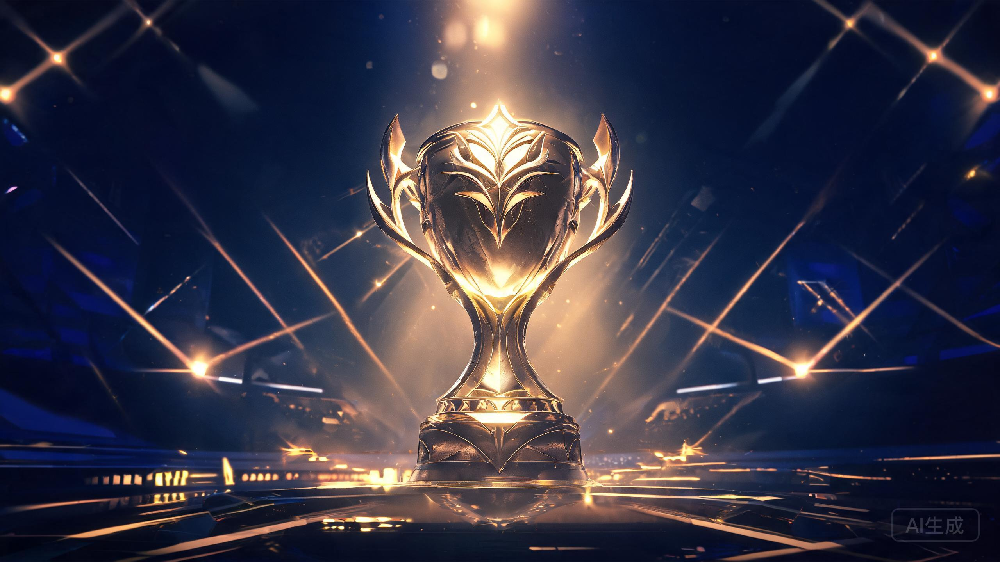
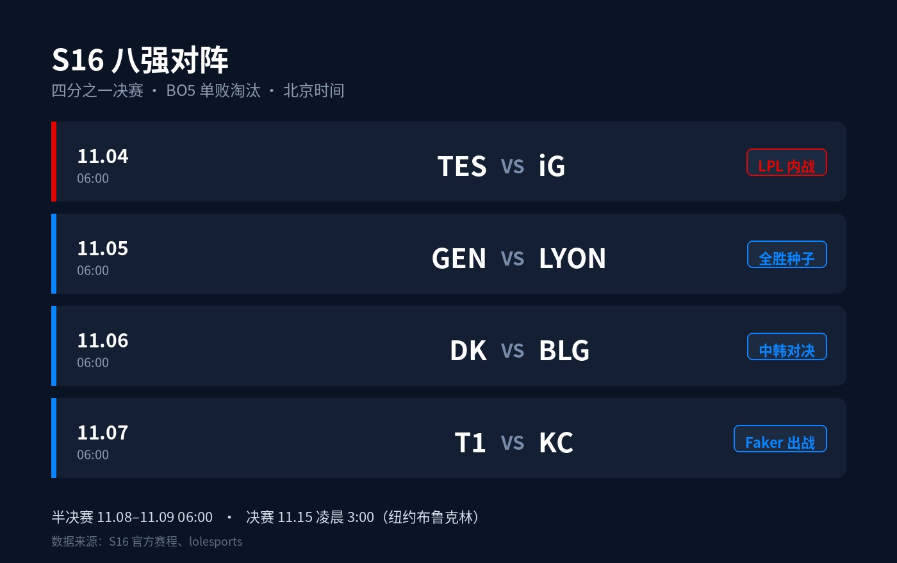

S16 全球总决赛
八强全部出炉
LPL 三队晋级 · 对阵落定 · 赛程全梳理
北京时间11月1日凌晨，S16瑞士轮第五轮结束：KC 2-0 MKOI、LYON 2-1 LOS、BLG 2-0 HLE。八强全部产生——LCK 三席（GEN、DK、T1）、LPL 三席（iG、TES、BLG）、LEC 一席（KC）、LCS 一席（LYON）。抽签随后进行，四组对阵落定，11月4日早上6点开打。
1
八强名单：三支LCK，三支LPL
GEN（3-0，LCK一号种子）：三战全胜，一场比赛没输就拿到了八强门票。Chovy + Canyon 的中野组合在中期决策上几乎不给对手机会。
DK（3-0，LCK三号种子）：同样全胜出线，第二轮 1-0 拿下 T1，是全胜路上最硬的一场。
T1（3-1，LCK二号种子）：五冠王。唯一的败仗是 0-1 负于 DK，随后迅速调整，第四轮拿下 MKOI 锁定八强。Faker 还在打，这本身就是新闻。
iG（3-1，LPL四号种子）：首轮 0-1 负 GEN，随后三连胜——第三轮 1-0 掀翻 HLE，这是 LPL 本届对 LCK 的首场胜利；第四轮 2-1 拿下 LYON，成为 LPL 第一支锁定八强的队伍。时隔七年重返世界赛八强。
TES（3-1，LPL三号种子）：首轮 0-1 负 HLE，之后连赢三场——AL、G2、BLG，第四轮 2-1 逆转 BLG 锁定八强。369 是替补上单 ZUIAN 两次面签被卡后临危受命进的首发，状态一路走高。
BLG（3-2，LPL二号种子）：一路跌到 2-2，第五轮 2-0 零封 HLE 压线晋级。Knight 的海报文案是官方给的八个字：狭路相逢，勇者向前。
KC（3-2，LEC三号种子）和 LYON（3-2，LCS二号种子）是最后两张门票的主人，两队都从生死战里爬了出来。
2
最后三张门票
第五轮三场 2-2 生死战，BO3，赢了晋级，输了回家。
KC 2-0 MKOI
欧洲内战一边倒。KC 把 MKOI 挡在八强门外，从 2-2 组里爬了出来。
LYON 2-1 LOS
打得远比想象中惊险，LYON 险胜晋级，成为 LCS 最后一根独苗。
BLG 2-0 HLE
当天的重头戏。HLE 第一轮赢过 TES，一路打到生死战，最后被 BLG 干净利落地 2-0 淘汰。LPL 保住三席，LCK 定格在三席。
3
四组对阵：第一场就是内战

▲ 八强对阵与赛程
11月4日 · TES vs iG：LPL 内战提前上演，必有一队止步八强。369 对 TheShy，替补救火的老将打 S8 冠军上单，这条线是全场最贵的。
11月5日 · GEN vs LYON：全胜种子打 LCS 黑马。GEN 首轮只打 3-2 的队伍，纸面优势明显。
11月6日 · DK vs BLG：中韩对决。BLG 刚在生死战零封 HLE，手感正热；DK 则是全胜晋级，一场没输过。
11月7日 · T1 vs KC：Faker 对欧洲新面孔。KC 从入围赛打到现在，韧性强，但 BO5 的 T1 是另一个物种。
4
赛程表：11月4日开打
淘汰赛全部为 BO5（五局三胜）单败淘汰。四分之一决赛和半决赛在德克萨斯州艾伦市举行，决赛移师纽约布鲁克林。
比赛时间（北京时间）：四强之前每天早上6:00 开赛。对国内观众来说，闹钟得调好。
| 阶段 | 日期 | 北京时间 | 对阵 |
|---|---|---|---|
| 四分之一决赛 | 11月4日（周三） | 6:00 | TES vs iG |
| 四分之一决赛 | 11月5日（周四） | 6:00 | GEN vs LYON |
| 四分之一决赛 | 11月6日（周五） | 6:00 | DK vs BLG |
| 四分之一决赛 | 11月7日（周六） | 6:00 | T1 vs KC |
| 半决赛 | 11月8日（周日） | 6:00 | 对阵待定 |
| 半决赛 | 11月9日（周一） | 6:00 | 对阵待定 |
| 决赛 | 11月15日（周日） | 凌晨3:00 | 纽约布鲁克林 |
▲ 数据来源：S16 官方赛程、lolesports
5
几个值得关注的看点
LPL 三席，但第一场就内战。11月4日 TES 打 iG，意味着八强刚开打就必有一支 LPL 队伍回家。另一场 DK vs BLG，赢了才有两队进四强的可能。
3-0 的种子优势有多大？GEN 和 DK 首轮只打 3-2 的队伍，纸面上晋级四强的概率很大。但 BO5 的世界赛，从来没有"稳"这个字。
BLG 是变量。跌到 2-2 才出线的队伍，往往在淘汰赛里最没包袱。2-0 淘汰 HLE 那场，是他们这届打得最痛快的一场。
Faker 还能走多远？没有人会在 BO5 里低估 T1。五冠王的每一步，都是新闻。
6
明早6点，先打内战
北京时间11月4日早上6点，TES vs iG，八强揭幕战。五局三胜，输的直接回家。
对国内观众来说，这个时间不算友好。但 S16 打到这里，LPL 只剩三支，第一场就要走一个。
定好闹钟。
这一场，值得早起。
评论区聊聊：
四组对阵，你觉得谁会翻车？
LPL 这次能有几队进四强？
点个关注。这几天的 S16 淘汰赛，每一场都跟。
资料来源：S16 官方赛果与赛程、lolesports、dotesports、虎扑战报。数据截至北京时间11月3日。